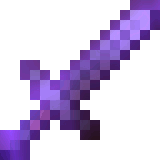

SMP PvP Guide
Welcome
Welcome
SMP PvP Guide [1.9+]:
Creators - McWetPaper and SpawnPlayer
Everything There is to Know About 1.9+ SMP PvP
This guide will show you all the tips and tricks to get good at SMP PvP Combat. We will show you the secrets of SMP and OP Tactics to get better quickly!
Basic Knowledge
üìú Basic Knowledge üìú
There are many different things in the SMP gamemode, some of the basics you will NEED to know
Kit
- Shields - Used to properly evade damage from the opponent and to provide better opportunities for good trades
 Pearls - Useful to make space between yourself and your opponent, can be used to save yourself or to enforce aggression on the other player
Pearls - Useful to make space between yourself and your opponent, can be used to save yourself or to enforce aggression on the other player Axe - Used mainly for disabling your opponents shield to give yourself a higher chance of getting good damage in
Axe - Used mainly for disabling your opponents shield to give yourself a higher chance of getting good damage in Golden Apples - Useful for regaining health quick and increasing your saturation in order to take better trades (necessary for victory)
Golden Apples - Useful for regaining health quick and increasing your saturation in order to take better trades (necessary for victory)- Totem of Undying - Used to prevent yourself from an untimely death, you must know how to use this properly and at what times
 XP Bottles - Out of everything it is MOST NECESSARY to understand how and when you should mend in this kit
XP Bottles - Out of everything it is MOST NECESSARY to understand how and when you should mend in this kit-  Swords - It is crucial that you understand when and how to use the KB1 and Non KB Swords, knowing this difference can put you ahead of your competition
- Potions - You must know how to use potions and what are the best methods to get the most out of your pots
Game Rules
üìù Game Rules üìù
- Reach - The max range is 3 blocks.
- Knockback - If you sprint while facing the target, you get less knockback. (works whilst jumping too)
- Range - If you jump/run back, or get knocked back, your range is lowered.
- Crouch - Decreases your hitbox size.
There are also some common terms which could help you through this guide:
- First Hit - The first hit you land on your opponent whenever you're engaging (typically before they hit you)
- Crit Chain - Getting multiple crits in a row.
- Spacing - How well you distance yourself from your opponent.
Useful Mods
⚙️ Useful Mods ⚙️
There are a few mods which are pretty necessary in SMP, and they will be listed below in order of most important to least important.
- InventoryHud - A mod that can show both how long is left on your pots, along with your armor durability. This is super important for mending.
- Player Health Indicators - Very useful for taking good opportunities to pressure, and nice for knowing what they are at.
- Appleskin - This mod highlights your hunger bars to display how much saturation you have, being extremely useful for your health management.
- Perspective/Freelook - Not to be confused with Freecam, this lets you orbit around your character, essentially having f5 that points in any direction you want. Nice for mending.
Basic Playstyles
üìî Playstyles üìî
❗ There are 4 Main Playstyles that most adopt to when playing SMP, and I am here to teach you the basics and strategies to count all 4 of them or to adopt whichever fits you most!
Passive
A passive playstyle involves the player being extremely defensive in their actions, making sure none of their actions can be punished. In this playstyle, it will typically involve a Shield Sacrifice. Once they execute their Shield Sacrifice, they may run to make sure they cannot be crit out. Doing this playstyle will also drain the other player of both pots and pearls. This playstyle usually works better on lower ping, because you have the advantage of getting the first hit. You will also want to punish players who agro too hard by doing pcrits and jump reset crits. (Low dura gaps, annoys your opponents, but can get you consistent wins. Best against aggressive if you do it correctly.)
Aggressive
A very head on playstyle. This playstyle mainly involves spacing, turning combos into punishing crit chains. Typically, using this playstyle often involves bringing trades down to shieldless, where your opponent cannot use their shield. To best use it, you want to either be on high ping with decent spacing, or low ping with very good jump resets and good spacing. It is crucial that you space your hits well, otherwise your combos can be countered and you will be punished easily. Having a strong agro doesn't mean that you have to play too risky, play smart, but don't let off of your opponents when you don't need to. (Best for having the highest dura gaps, easiest to punish. Best playstyle against Defensive.)
Safe-Agro
A less aggressive playstyle than aggressive, this playstyle is a mixture of both aggressive and passive. To do this, you want to hold the same agros as you would with an aggressive playstyle, but as soon as you start to lose a trade you back away. This playstyle helps to prevent less experienced players from over-agroing themselves to death. To do this, avoid taking agros where your opponent is above 4 hearts, or less than 2-3 hearts lower than you. (Good for consistent wins and high gaps over players with lower skill than you. Excels against all.)
Defensive
While being a safer playstyle than a Safe-Agro, this playstyle is both aggressive and one of the BEST playstyles you can do. To do it, you want to agro the same way you would with an aggressive playstyle, but you want to escape from trades and play safe when you THINK they can make a comeback. This helps prevent you from being punish crit, hit selected, and out shielded. It is the BEST playstyle to win matches, although you will not have dura gaps as big as an aggressive playstyle. (Best for consistent & Safe wins, works well against all playstyles.)
Shielding
üõ°Ô∏è Shielding üõ°Ô∏è
❗ It is extremely important that you use your shield properly, otherwise it can harm your chances of winning.
- Timing
On almost all servers, there is a base delay of about 250ms + your ping for when you pull up your shield. This means on 50 ping you will have a 300ms delay on your shield. - Uses
Make sure in SMP you always use your shield in your offhand. The only times your shield should be removed from your offhand are when you are going to pop a totem, and when you are mending your armor. Your shield can also be disabled when it is hit with an axe. - How To Use
Right click with your shield in your offhand (make sure you are not holding your pots, pearls or gaps,) to use your shield. When pearling, gapping or potting, make sure that you don't hold down your shield before you swap to these items. When someone is going to hit you, use your shield to protect yourself from taking damage. - Shield Baits
For this strategy, you will abuse your built-in shield delay. You want to only shield for as long as your delay is, so if you have 50 ping, you want to hold up your shield for less than 300ms. This will lead your opponent to attempt a shield break, but not be able to disable it as it was in its phase of delay. Example:
- Shield Value
Shield value is the best way to know when YOU should shield. The higher the value, the better situation it is for you to shield. For example, if you are going to be put in a combo, your shield has HIGH value. The higher your shield value is, the more important it is to use. As another example, if you are not in the range of your opponent, your shield would have no value as it does not matter whether it is disabled or not, while in a combo, you want your shield so that you can prevent from being damaged further. The purpose of a shield is to put you in the best position possible. It isn't to keep it up in a trade or bait with it, so keep this in mind if you think you need to keep your shield up. - Fast Shielding
This strategy works best against high ping. You want to shield faster than their delay on their axe. For example, if they have 150 ping, you only want to hold your shield up for 150 milliseconds or less. If that still does not make sense, if your opponent breaks shields off reaction time, it will make it impossible for them to break your shield. This is because they have a 150ms delay on being able to break your shield, so you should ONLY hold up your shield for a very small amount of time. This amount of time will be decided based off their ping. If they have 200 ping, you can hold your shield up for 200ms after the delay. - Shield Sacrificing
Shield Sacrifices work similar to an auto hit, allowing you to sprint hit your opponent away as soon as your shield breaks. This works best against higher ping players, as they will often try to shield when they break yours and they have a higher delay on their shield. This can also give you an advantage in being able to start a combo. Shield sacrificing can also be done right after you break your opponents shield, allowing you to block them from shield sacrificing on you.
Shield Breaking
Shield Breaking
❗ Shield breaking is probably THE single most important factor of SMP, as being able to break a shield can change the entire game. Knowing how to shield break can put you at an EXTREME advantage over every single opponent you face.
-
Defensive Shields
Fighting someone who shields defensively is usually one of the easiest shields to break. A player who has defensive shielding is someone who prioritizes using their shields from a distance. They tend to avoid close quarters and using a shield to apply pressure, and instead use their shield when it helps prevent them from taking more damage than they already would.
BreakingTo break a shield of a defensive shielder, you want to force them into a position where they MUST shield in order to prevent damage. Doing this can include putting them in high pressure situations like out critting them or at the start of a combo (an example will be shown below). Typically, defensive shielders won't shield right away as they'll tend to wait to know that they will certainly lose the trade. Usually, they'll shield on the 3rd hit of a combo, as the first hit they will try and hit you back, and the second they will try and break it. Another way you can do this is wait until they are down 1-2 hits in a crit trade. This way, they know they are down health and they will try and use their shield to prevent the gap from increasing or staying at the same gap. This can be when doing P-crit trades, jump reset crits, or just critting them out before they hit you like when they gap. If you crit them while they gap or mend, they'll usually shield AS SOON as they finish their gap or get their shield back in their offhand, so go for a shield break during this moments. If you see someone have different timings or priorities, like shielding after 2 or 4 hits instead of 3, take note and adjust to that.
-
Aggressive Shields
Aggressive shields are much more difficult to break, being the hardest time to benefit and properly break a shield. People who shield aggressive often neglect their defensive shielding and can be punished much harder when you pressure, but will also pressure you SIGNIFICANTLY harder, allowing them to benefit by blocking your hit while they chase you. This will prevent you from canceling the pressure and can make it much harder to avoid.
BreakingTo break someone with aggressive shielding, you'll want to wait for when they go to shield during pressure. They will often shield when they think you can cancel their pressure, so if you use an axe instead of a sword, you'll easily be able to disable their shield (example will be shown below). Disabling your opponents shield when they are pressure can help bring back a losing trade, as it helps a lot in preventing them from continuing pressure, along with allowing you to pressure them back. For example, if they crit you out and you break their shield, it'll be much easier to sprint hit them away rather than having to hit between their shielding which can prevent you from dropping. People often do this during a few situations which include: being lower, having no shield, being comboed, or when you get pearl blocked (throwing a pearl but it hits your opponents body instead of getting away). Be watchful of how your opponent tends to shield, if they decide to play more aggressive you'll have to do this shield breaking more often.
-
Shield Dancing
Shield dancing involves being in close quarters with your opponent while you both hold up your shields in a stalemate. These situations can be extremely dangerous as they tend to happen on very low health and playing them wrong can completely end the round. You'll usually want to be the one to start it and end it, as this will be because you are on low health.
BreakingTo win these trades, you'll almost always be on low health (below 4 hearts), otherwise you should not take them. If you do take them it should be in a situation where you MUST take it or you'd drop otherwise. Starting this, you'll want to hit your opponent through their shield at the start of it, typically by baiting at the start of it. This will get them on more manageable health (an example from a real HT1 test will be shown below). Once you do this, try to avoid going for stuns and focus on auto hitting. You can try and stall this out to see if your opponent will disengage first, giving you a chance to heal and recover, OR you can go for backstabs or other plays, but keep in mind this is EXTREMELY risky and can end up losing you the round if done improperly.
Armor Mending
Armor Mending
❗ Knowing how to properly mend is one of the most important features in SMP. A good or bad mend can change the result of a tier test.
Normal Mending
- First Mend
For your first mend, you want to get every single piece to around 400 durability. During this mend, you do NOT want to take off your helmet. This is because your helmet already maxes out at 407 durability, meaning taking it off would be pointless and give you less protection. Make sure you do not offhand your shield while you mend. Make sure to throw your bottles straight down while mending, otherwise they will bunch into one orb and put all of the durability onto one piece rather than spreading out.
- How to do it Efficiently
Begin mending once your helmet reaches around 60 durability. You want to throw all of your bottles until an armor piece reaches about 400. Once an armor piece reaches 400 durability, you take that armor piece off so the other pieces can heal. This will lead to all armor pieces being at around 400 durability, in the fastest and safest way possible. Be sure to hold your totem in your offhand, and go into an F5 view or use Perspective to get a view of where your opponent will be. Do not worry about going into your second stack of XP bottles, it doesn't matter if you have to.
- Example
- Second Mend
This mend is a lot more difficult than the first mend, as during this you often cannot get all pieces to 400. During this mend, make sure you do NOT have your shield in your offhand even IF your totem has popped. For this mend, you want to estimate what your armor can get to and mend it all to that. If you do have 5-10 XP bottles left over, that is okay.
- How to do it Efficiently
Begin mending once your helmet is around 100 durability. You won't be able to get all pieces to 400 durability, so to make it easier, set a reasonable goal to get your armor to. Once a piece reaches your goal, take off that armor piece. For example, if you are at 120 durability on every piece, you can estimate that you're able to get to about 300 durability. If you have 15 bottles left over, you can set a goal for yourself to get all pieces to 320. In this scenario, you may end up with 5 bottles left going into the end game, allowing you to make up for the RNG from unbreaking.
- Example
- Extra Scenarios
These are scenarios that aren't completely related to the first and second mend, yet affect the outcome of the game.
- Shield Mending
Usually, you won't need to mend your shield, but if you do, it should be at about 30 durability, as compared to your armor being like 200. If you have bottles left, you should mend your shield to 1/3 of what your armor is. For example, if your shield is 20 durability, and your armor is 240, you would mend your shield up to 80.
- Early Armor Breaking
While this would usually mean certain death on the first mend, it is still possible to clutch the game. In this case, you would mend your armor to the NEXT lowest durability. For example, if your helmet breaks and you forget to mend, you would mend the rest of your pieces to 480, since your boots max there.
Agro Mending
- Agro Mending
Probably the BEST tactics you can use, agro mending is where you pressure your opponent while they mend, while you also mend. You want to stay at a decent range from your opponent (far enough away so if they pearl you can put your armor on) and mend while watching them. Once you see them take off their armor, pearl at them and make sure it lands in 1 PEARL THROW. Otherwise, they'll have enough time to react to it from the sound of your pearl and put their armor on. This tactic gives you the ability to either: Kill them while they have no armor on (1 - 2 hits is enough to kill from full health), or pressure them if they get their armor on, allowing you to drain their armor durability as they struggle to recover.
- Example
Here you have a video of Freeke Fang showing how to agro mend:
Gamesense
ü߆ Game Sense ü߆
❗ Game sense is extremely important in SMP, helping you know when to disengage, pressure, and heal.
Surviving
Knowing how to survive is extremely important in SMP, as it can make the difference between life and death in a match.
Toteming
In SMP, there are a few moments where you'd want to offhand your totem. Usually, it is most worth it to offhand your totem below 4 hearts. Sometimes though, it's worth it to offhand your totem at 5-6 hearts if your shield gets disabled. You can pressure with your totem in your offhand if they are THE SAME HEALTH OR LOWER, otherwise you can be taking an unwinnable trade. For example, if your opponent is on 7 hearts and you are on 5, if your shield breaks then you would offhand a totem and pearl. If both players' shields are broken and you are on 5 hearts and they are on 4, you would then take that trade with a totem in your offhand. This removes the risk of dropping while giving you the chance of getting a drop on them. If you are on the same health and they have a shield while you do not, it is not worth it to take a trade with your totem offhand. Keep in mind that it is almost never worth it to main hand your totem, as off handing will allow you to gap while you hold it and it can give you a few chances to survive and keep it.
Pearling
Pearling is one of the most important factors of SMP. Knowing both how to pearl, and how to escape are extremely important. To properly pearl away from your opponent, you want to either flick your head to the side quickly so that you are looking away from your opponent, and do not hit them with your pearl. Lining up your pearl for an escape does not matter, as it only matters that you are getting away, not where you go. Just make sure that you throw your pearl at a decent height so that it does not hit the ground immediately. This can often be done right after you hit them or they hit you, so that you can build distance while your pearl is landing and you can't be crit out. Once you throw your pearl, immediately begin gapping. Never waste time aiming your pearls, as long as you flick them behind you or to the side.
Disengaging
This is often overlooked by lower tiered players, but making sure that you exit a trade when they can make a comeback is extremely important. Often times, you will be comboing an opponent and they will land jump resets and crit you after you combo. This can be devastating to your durability and health, as overall you will lose more from being crit while you are sprint hitting. Make sure that whenever your opponent is in a position to make a comeback, you get away from that so that you cannot be punished. This will help you increase durability gaps, and be safer during your duels. Don't be over sensitive to positions they are in, sometimes you can win, just think about it before you engage and whether it would be wise or not.
Pressuring
Pressure is extremely important in SMP, as it can make the entire duel for you, allowing you to bring back losing duels in durability, or get drops that would otherwise be very difficult to get.
Pressure Timing
Knowing when to pressure is key to both avoiding putting yourself in a dangerous situation, and putting them in an unwinnable scenario. Usually, the best time to pressure is when they are BELOW 6 hearts or 4 hearts below you. For example, if you are on 9 hearts and they are on 5, you should pressure, as the situation they are in is likely unwinnable. However, if you are on 6 hearts and they are on 5, it is more worth it to eat gaps until you are full health or until they start to engage. Having a shield is also important to knowing pressure. If they are on 6 hearts and you are on 8, but they do not have a shield and you do, then it would be worth it to pressure using your shield. No matter what, even if they break your shield you would still be able to get a free hit on them from that allowing you to both increase your durability and health gap, and put them in a position to be dropped. Keep in mind, that if someone is on 2 hearts you have the chance of landing a crit which hits for 2 hearts, or a 2.5 heart crit with an axe. This is because of how health works with rounding and decimals, so it allows you to have the chance to get half a heart more damage than normal. In this situation, you'd pressure even on 1 heart higher, as they are in a position where they can be 1 tapped and you can't. For example, if you are on 3.5 hearts and your opponent is on 1.5, you would chase them so that you can get 1 hit on them and drop them.
Pearl Chasing
Chasing your opponent with a pearl properly is one of the hardest and most important things to perfect. Ideally, you want to land at your opponents feet in 1 pearl so that you have the minimum amount of time away from your opponent and the most amount of time to hit them for a fully charged crit. Landing at their feet ensures that you have no air time, so you can immediately jump and crit, or sprint hit upon landing. Along with this, you will have an invincibility frame when your pearl hits the ground. This will give you time to damage your opponent while you take reduced damage and kb. To properly pearl chase, you want to follow your opponents head movement. If their head looks to your right, then you look to your right in the same angle and direction. You want to throw your pearl once you see theirs to ensure you aren't getting faked out and knowing where to land. You want to throw your pearl as soon as you see theirs on your screen, that way you can get there as fast as possible.
Healing
Healing is extremely important into your game. Knowing when to heal and how much to heal for, can be the difference between gaining durability on your opponent and you dropping.
Saturation
Saturation is super important in your gameplay, as having no sat as opposed to full sat can make the difference between dropping and winning. For example, if you are on 5 hearts, and gap to full health, you will still need to gap 1-2 more times afterwards so that you can reach full saturation. Saturation gives you your natural healing, and will heal you faster than the regeneration effect will. When you gap, you gain saturation, but if you are already lower on health, it will use the saturation that you just gained to heal you faster. Going into a trade with full saturation can help you regen throughout the trade, and having more saturation will help you outlast your opponent.
Timing
Knowing when to gap is even more important, as improper gapping can lose you TONS of durability. For example, you want to make sure that you gap to full saturation when you have enough distance from your opponent and they are not pressuring you. Keep in mind that your FIRST GAP is the most important gap that you eat. An example where this is useful is when you are being pressured. If you pearl away from your opponent, and get a gap off, hit them back before you pearl again. This is because you have healing to prevent you from going down to the health you were at before, and you can damage them so they cannot pressure you. In a fight, many players will pearl out and gap, but they get crit out when they finish gapping. Often times they pearl away when they are crit, but if you fight your opponent before pearling away again, you maintain the health you originally gapped at while being able to fight off their pressure and punish them. If you see your opponent at a distance gapping to full sat and they are higher health than you, take that opportunity to gap to full health as well.
 Tactics
Tactics
üéØ Tactics üéØ
❗ These are tactics that should be used in SMP and will help you throughout the game.
- Cooldown Trick
The cooldown trick allows you to have SIGNIFICANTLY less risk while going for a shield break. It allows you to damage your opponent for the value of your sword (1 heart on a sprint hit, 1.5 hearts on a crit) if they DO NOT hold up their shield, while being able to disable their shield if they DO hold it up. To do this, you click at the EXACT same time that you switch to your axe. To help you remember, you can try and remember to "Swing as you switch." - Example:
(All hits in this video were done in the exact same way to show that can damage and disable with the same type of hit)
- No KB Swapping
This tactic involves swapping to the no kb sword and using it to gain pressure on your opponent when they turn their backs, preventing them from being hit out of your reach by the KB sword. It is extremely useful for situations when they are out of pearls and have to run, they turn their backs to bait, they are axe spamming (use the no kb sword when they spam axe baits), and when they turn out to pot or gap. It gains lots of dura and can even help drop your opponent. - Example:
- Crouch Potting
Crouch potting is just crouching while you pot. When you do this, it brings your hitbox closer to the ground, allowing you to get more time on the pots than if you were standing by a few seconds. This is good to do when you don't have a chance to pot upwards and don't want to waste a pearl to pot. Isn't too important but gives you a few extra seconds to have on your pots in a pressured situation. - Jump Pearling
This can be used to help get your pearls farther under a pressured situation. When you are going upwards (jumping or taking vertical kb), your pearls will go higher and farther. You can use this to gain distance and help control your pearls while also getting away. Say, if you are hit you can pearl to the side while you are taking your vertical KB and then run at one time to get away from a pressured situation. - Example:
- Axe Baiting
Being useful at the start of trades, axe baits are a good way to gain a significant health lead over your opponent. Since axe hits do 2 hearts per crit and your movement will be different, it'll be a great way for you to gain a good early lead without taking much damage. Mostly relies on your opponents missing their hits or being at a further range, but can be countered pretty hard if they decide to use no kb so you can't run away. - Example:
- Pearl Drag
While it is one of the most obscure and unknown features, it is also extremely useful if used properly. Essentially, pearls do not instantly teleport you on your opponents screen. You will float from your location of where you throw the pearl, to where the pearl lands on their screen. On YOUR screen, you will instantly be at where the pearl landed, allowing you to hit them before they can see you. It is very ping based, being almost exclusively effective on below 60 ping. It works, because in the time that it takes for you to float over on your opponents screen, you can hit them since you are already there on YOUR screen. - Example + Explanation:
(Please play video in .25x speed, it'll make it easier to notice)
In the video and screenshot, you can see how although he throws a pearl his character moves across the distance. This shows the dragging and delay of teleport on your opponents screen. On his screen, however, he was already where the pearl landed (as shown by where the red arrow is point to.) (The X marks where he pearled from, he is circled, and the arrow points to where he is on his screen at the time.) This gives you an advantage, especially on low ping as the time it takes for you to teleport on your screen relies on your own ping, as you can hit them before they can see you.